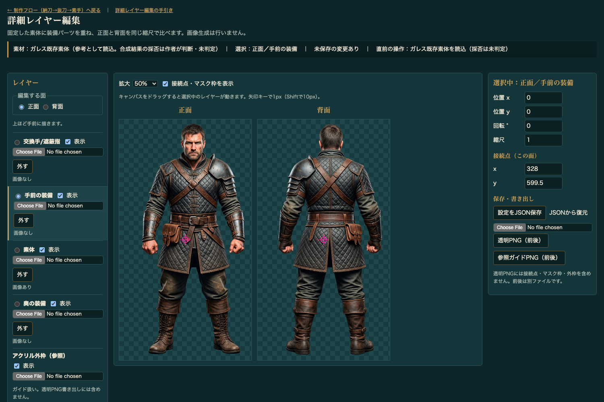
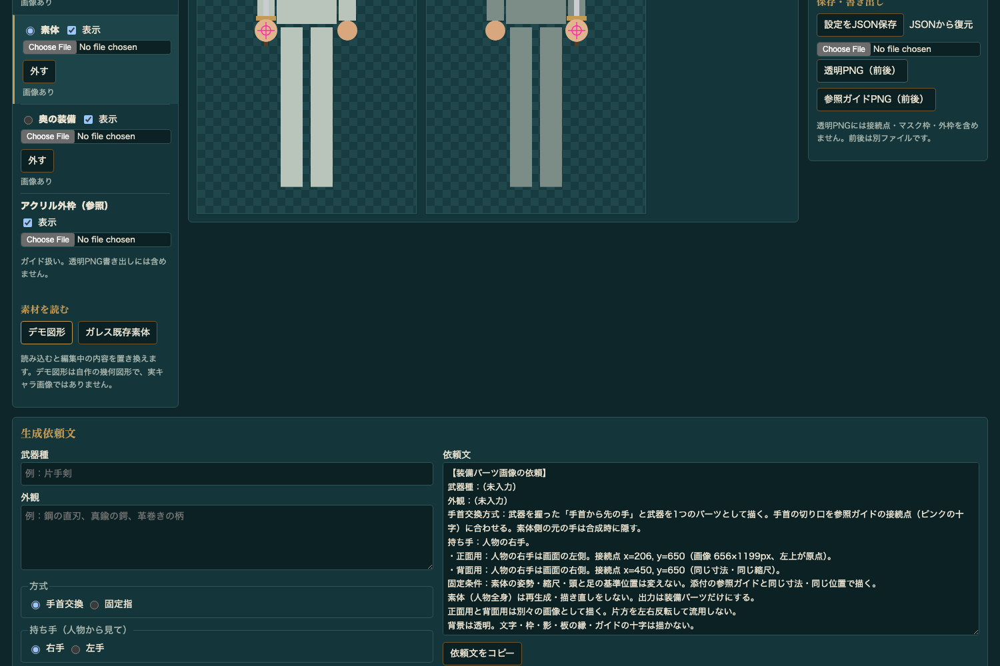
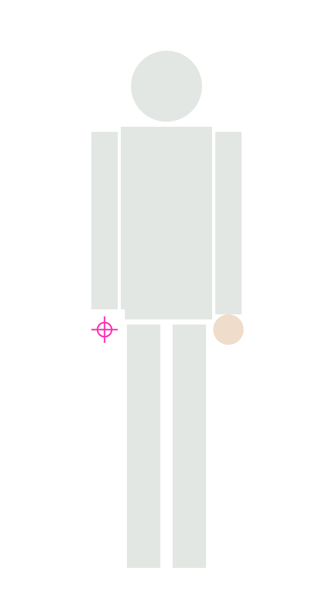
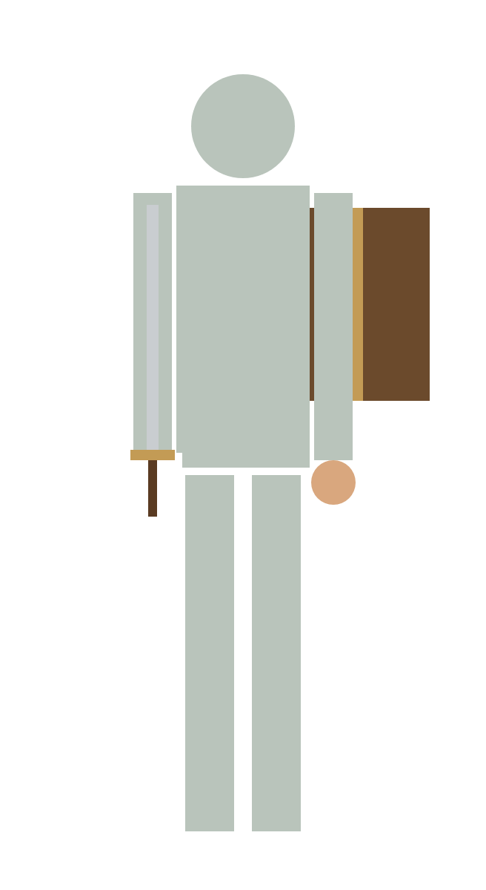

1. このツールがすること・しないこと
すること
- 素体の上に、手元にある透明PNGの装備画像を重ねる
- ドラッグや数値で、装備の位置・回転・大きさを合わせる
- 正面と背面を横に並べて、同じ大きさで見比べる
- 作業をJSONで保存し、あとで続きから開く
- 合成結果を透明PNGで書き出す
- 画像生成AIへ渡す依頼文と参照ガイドPNGを作る
しないこと
- 画像を生成しない。装備の絵は、別の生成AIや作画で用意します
- 背景を透明にする加工はしない（透明PNGを用意して読みます）
- 装備を手の位置へ自動で合わせない（人が動かします）
- 合成結果を本編に登録しない。採否は作者が目で決めます
2. 起動のしかた
ログインやAPIキーは要りません。ターミナルで次の2行を実行し、ブラウザーで下のアドレスを開きます。
cd ~/Desktop/Terminus/trpg-gm-mock3
python3 -m http.server 8765アドレス：http://127.0.0.1:8765/tools/standee-layer-editor/layer-editor.html （この手引きもそのサーバー経由で開いていれば、上の 編集ツールを開く でも同じ画面が開きます）
file:// で始まる）と、ガレス既存素体 の読み込みだけが失敗します。デモ図形や自分のPNGの読み込みは動きます。3. 画面の地図（番号つき）
画面は左・中央・右の3列と、ページ下部の「生成依頼文」でできています。下の図はガレスを読み込んだ直後の、ページ最上部の様子です。

screenshots/07-gareth.png（画面幅1500px）に番号を重ねたものです。
| 番号 | 名前 | 何をする所か |
|---|---|---|
| 1 | 状態の帯 | 今の素材・選択中のレイヤー・未保存かどうか・直前の操作を表示します。迷ったらまずここを読みます。エラーはこの下に赤字で出ます。 |
| 2 | 編集する面 | 正面 / 背面。左のレイヤー一覧と右の数値は、ここで選んだ面のものです。 |
| 3 | レイヤーの1段 | 丸いボタンで動かす対象を選びます。Choose File（日本語環境では「ファイルを選択」）で画像を入れ、外すで外します。表示のチェックで一時的に隠せます。一覧は上ほど手前です。 |
| 4 | 拡大 | 見た目の大きさだけを変えます（35〜200%）。位置の数値は変わりません。 |
| 5 | キャンバス | 左が正面、右が背面。ドラッグすると3で選んだレイヤーが動きます。クリックした側の面が編集対象になります。ピンクの十字が接続点です。 |
| 6 | 位置・回転・縮尺 | 選択中のレイヤーを数値で合わせます。ドラッグの微調整に使います。 |
| 7 | 接続点（この面） | ピンクの十字の位置。手首や柄の付け根の目印で、依頼文と参照ガイドPNGに使われます。 |
| 8 | 設定をJSON保存 | 作業の保存（続きから再開する用）。 |
| 9 | 透明PNG（前後） | 完成した合成画像を正面・背面の2枚で書き出します。 |
| 10 | 参照ガイドPNG（前後） | 生成AIへ渡す下敷き画像を2枚書き出します。 |

screenshots/01-demo.png。デモ図形を読み込み、一番下までスクロールした状態です。
| 記号 | 名前 | 何をする所か |
|---|---|---|
| A | デモ図形 | 練習用の図形（自作の幾何図形。実キャラではありません）を一式読み込みます。 |
| B | ガレス既存素体 | ガレスの正面・背面の素体（装備なし）を読み込みます。 |
| C | レイヤーの段（素体） | スクロールした後も、レイヤー一覧は左列の上の方にあります。 |
| D | JSONから復元 | 保存したJSONを選ぶと、その時の作業に戻ります。 |
| E | 武器種・外観 | 依頼文に入る言葉を書きます。 |
| F | 方式・持ち手 | 手首交換か固定指か、右手か左手か（人物から見て）。 |
| G | 依頼文 | 自動で組み上がる文章です。直接は書き換えられません。 |
| H | 依頼文をコピー | クリップボードへコピーします。 |
4. 最初の練習：デモ図形で「動かす」と「保存」だけ
まずは壊しても困らない図形で、2つの操作だけ試します。所要時間は数分です。
- 編集ツールを開き、左列の下にある「素材を読む」が見えるまでスクロールして A デモ図形 を押します。正面と背面に、灰色の人型・剣・盾・肌色の丸が出ます。
- ページを上に戻し、左列のレイヤー一覧で 「手前の装備」の丸いボタンを押します（地図の 3）。状態の帯 1 が「選択：正面／手前の装備」になったことを確かめます。
ここが一番のつまずきどころです。デモを読み込んだ直後は「素体」が選ばれています。そのままドラッグすると人型ごと動きます。動かしたい物を先に選びます。
- 正面のキャンバス 5 の上でドラッグします。剣が動けば成功です。細かく動かすときは、キャンバスをクリックしてから矢印キー（1px、Shiftを押しながらで10px）。
- 右列の 6 の「位置 x」が変わっていることを確かめます。数値を直接打って Enter でも動きます。
- 右列の 8 設定をJSON保存 を押します。
standee-layers.jsonがダウンロードされ、状態の帯が「保存済み」になります。 - （確認）剣をもう一度動かしてから、ページ下の D で今のJSONを選びます。剣が保存した時の位置に戻れば、保存と復元ができています。
5. 基本の4手順（ガレスで試す）
① 「ガレス既存素体」を押す
左列の下にある見出し「素材を読む」が見えるまでスクロールし、B ガレス既存素体 を押します。上の地図の図と同じ画面になれば成功です。状態の帯に「採否は未判定」と出るのは、このツールが合成結果を採用しない、という意味です。
② 装備画像を入れる（正面と背面は別々に）
- 2 で 正面 を選びます。
- 入れたいレイヤーの段（例：剣なら「手前の装備」3）の Choose File を押し、正面用の透明PNGを選びます。その段が自動で選択状態になり、段の下が「画像あり」に変わります。
- 2 で 背面 に切り替え、同じ段に背面用の透明PNGを選びます。
読めるのは PNG / JPEG / WebP（1枚15MB・一辺4096pxまで）です。JPEGは透明を持てないので、装備は透明PNGを使います。どの段に入れるかは 8. 紙の重ね順 を見てください。
③ 動かして合わせる
- 左の一覧で、動かす段の丸いボタンが選ばれていることを確かめます（状態の帯でも確認できます）。
- キャンバス 5 でドラッグして大まかに置きます。
- 右列 6 の数値で仕上げます。位置x/yは画像の左上の位置、回転は度、縮尺は1が等倍です（回転と縮尺は画像の中心を軸にします）。
- 細部は 4 の拡大を 100% や 200% にすると見やすくなります。
- 背面も同じように合わせます。背面は正面の位置を引き継ぎません。
④ JSON保存
8 設定をJSON保存。続きをするときは D JSONから復元 でそのファイルを選びます。見た目を確定した画像が欲しいときだけ、9 透明PNG（前後） も押します（違いは 12）。
6. 装備画像がまだ無いとき（生成の前段階）
このツールは絵を描きません。装備画像が無い人は、ここで生成AIに渡す材料を作り、ツールの外で生成してもらってから、5章の②へ戻ります。
| 段階 | どこで | 状態 |
|---|---|---|
| a. 「ガレス既存素体」を押し、接続点を合わせる | このツール | 装備は未生成 |
| b. 依頼文を作り、参照ガイドPNGを書き出す | このツール | 装備は未生成 |
| c. 依頼文とガイドPNGを渡して生成・背景透過 | ツールの外 生成AI・作画 | ここで初めて装備画像ができる |
| d. できた透明PNGを読み込んで合わせる | このツール（5章の②③④） | 生成済み |
a. 接続点を合わせる
接続点（ピンクの十字）は最初、画像の真ん中（x=328, y=599.5）にあります。持たせる手の手首（固定指なら握りの中心）へ動かします。
- 2 で 正面。右列 7 の x と y に数字を入れ、Enter。十字が動くのを見ながら、入力欄で ↑↓ キーを押すと1ずつ動かせます。
- 2 で 背面 に切り替え、背面の手首にも合わせます。背面は人物の右手が画面の右側に来ます（7章）。
b. 依頼文と参照ガイドPNG
- ページ下の E に武器種（例：
片手剣）と外観（例：鋼の直刃、真鍮の鍔、革巻きの柄）を書きます。 - F で方式（9章）と持ち手を選びます。持ち手は人物から見た右・左です。
- G に依頼文が組み上がります。接続点の数値・前後の左右・「素体を描き直さない」「左右反転で流用しない」などの条件が自動で入ります。
- H 依頼文をコピー。
- 上へ戻り、10 参照ガイドPNG（前後）。
guide-front.pngとguide-back.pngがダウンロードされます。

参照ガイドPNG（デモ図形の正面）。素体が薄く、接続点の十字が入ります。装備は入りません。
c. この2枚と依頼文を、生成AI（または作画する人）へ渡します。返ってきた画像の背景が透明でなければ、透明にしてから読み込みます。
d. できた正面用・背面用のPNGを、5章の②から読み込みます。生成された装備の手首を、ピンクの十字に合わせるように動かします。
7. 正面・背面と左右
キャラクターの「右手」は、正面から見ると画面の左、背中から見ると画面の右に来ます。依頼文はこの変換を自動で書きます。
8. 奥と手前：紙の重ね順
1面は4枚の透明な紙を重ねたものと考えます。下の紙ほど奥、上の紙ほど手前です。左の一覧は上ほど手前の順に並んでいます。
例：デモ図形では、正面の盾が「奥の装備」なので腕と胴の後ろから覗き、剣は「手前の装備」なので腕の前に出ます。
アクリル外枠（参照）は4枚とは別の確認用の重ね画像です。板の形の画像を読むと薄く重ねて表示されますが、透明PNGには入りません。
9. 手首交換と固定指
手に武器を持たせる方法は2つです。F の「方式」で選ぶと、依頼文の書き方が変わります。
手首交換
武器を握った手首から先と武器を、1枚の絵として描いてもらいます。
- その1枚を「交換手/遮蔽指」の段に入れ、手首の切り口を接続点に合わせます
- 素体の元の手が見えて二重になるので、マスクで元の手を隠します
向くとき：元の手の形が武器の握りに合わないとき。
固定指
素体の手はそのまま使い、2枚に分けて描いてもらいます。
- 武器本体 → 「手前の装備」
- 柄の手前に掛かる指だけ → 「交換手/遮蔽指」（武器の上に重なり、握っているように見えます）
- 素体の手を消さないので、マスクは普通いりません
向くとき：素体の手がすでに握りの形のとき。
デモ図形は練習用に、剣（手前の装備）と肌色の丸（交換手/遮蔽指）を別々の段に入れてあります。実際の手首交換では、手と武器が1枚の絵になります。
10. マスクは必要な時だけ
マスクは、素体の一部を四角く透明にする機能です。素体の段にだけ効き、装備の段は消しません。
- 使うとき：手首交換で、素体の元の手が新しい手の周りからはみ出して見えるとき。
- 使わないとき：固定指のとき、元の手が装備に完全に隠れているとき。不要なマスクは体を欠けさせるだけです。
- 左の一覧で 素体 の段を選びます。右列に「元の手を隠すマスク（素体だけ）」が現れます（他の段を選んでいる間は出ません）。
- 矩形を追加。接続点を中心に80×80pxの四角が置かれ、赤い点線で表示されます。
- x・y（左上）・w・h（幅・高さ）を数値で直します。要らなくなったら 削除。
マスクも面ごとです。背面にも必要なら、2 で背面に切り替えて同じ操作をします。赤い点線と十字は 4 の横の「接続点・マスク枠を表示」で隠せます（書き出しには最初から入りません）。
11. 〜 12. JSONとPNGの違い
| 設定をJSON保存 | 透明PNG（前後） | 参照ガイドPNG（前後） | |
|---|---|---|---|
| ファイル | standee-layers.json（1つ） | standee-front.pngstandee-back.png | guide-front.pngguide-back.png |
| 中身 | 読み込んだ画像そのもの・各段の位置/回転/縮尺・マスク・接続点・依頼文の入力 | 重ねた結果の絵だけ（接続点・マスク枠・外枠なし、背景透明） | 薄い素体＋接続点の十字（＋外枠）。装備なし |
| 目的 | 作業の続きをする | できた絵を使う・見せる | 生成AIへ渡す |
| あとから動かせるか | はい。復元すれば剣だけ動かし直せます | いいえ。1枚の絵に固まっています | — |

透明PNGの例（デモ図形の正面、元の手をマスクで隠した後）。十字や点線は入りません。
JSONは画像を中に含むので、ファイルが大きくなります（画像の数と大きさ次第で数MB〜）。中身は手で書き換えず、このツールで開きます。
13. 困ったとき
| こうなった | 原因と直し方 |
|---|---|
| ドラッグしたら人物ごと動いた | 「素体」が選ばれています。一覧で動かしたい段を選び直します。元に戻すボタンは無いので、右列 6 の位置x/yを 0 に戻します（素体の初期値は0, 0）。 |
| 読み込んだのに見えない | (1) 編集する面が違う（正面に入れたつもりで背面に入れた）。(2) その段の「表示」が外れている。(3) 位置が画面外。6 で x/y を確かめます。 |
| 装備の周りが白い四角になる | 画像の背景が透明ではありません（JPEGなど）。透明PNGを用意します。 |
| 赤字で「範囲外です」 | 位置は±5000、回転は±360°、縮尺は0.05〜10、接続点は画像の中（x 0〜656、y 0〜1199）。範囲外の値は反映されず、元の値が残ります。 |
| 「ガレス素体を読めません」 | file:// で開いています。2章の方法でサーバー経由で開きます。 |
| 背面だけずれる | 正面と背面の位置・接続点・マスクはすべて別々です。背面に切り替えて合わせ直します。 |
14. 今のツールにできないこと
使っていて「こうできたら楽」と思う所は、今の仕様では人の手で行います。将来の改善候補であり、現在はありません。
- 画像の生成・背景の透明化（ツールの外で行う）
- 装備の手首を接続点へ自動で吸着させる
- キャンバスをクリックして接続点を置く／マスクをドラッグで描く
- 正面の位置を背面へ写す
- 元に戻す（Undo）。こまめにJSON保存して代わりにします
- キャンバスの大きさの変更（656×1199px固定。ガレス素体の寸法）